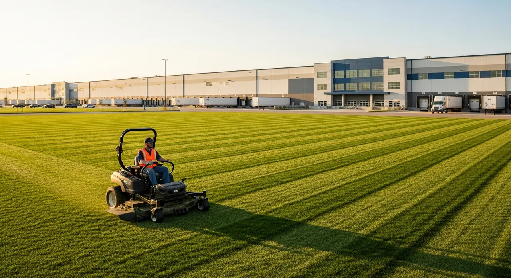
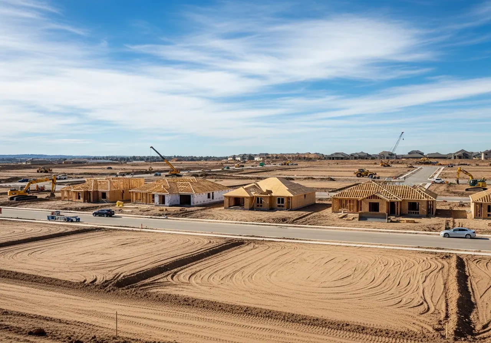

5.0
Rating on Google
Based on 6 reviews
Reviews verified on Google September 21, 2026.

Commercial landscaping and exterior grounds maintenance that keep your property looking professional, welcoming, and well cared for.
Customer feedback
5.0
Rating on Google
Based on 6 reviews
Reviews verified on Google September 21, 2026.
Sep 2026
“Great guy to work with! Had a pond with a lot of growth and Duke and his crew cleaned it up fast!”View on Google
Sep 2026
“P1 did a great job”View on Google
Sep 2026
“Does great drainage work. Property is dry even through the heaviest of rains”View on Google
Sep 2026
“P1 Land Management did an excellent job! They were professional, dependable, and great to work with from start to finish. The quality of their work really shows, and they took the time to make sure everything was done right. I highly recommend P1 Land Management to anyone looking for reliable, high-quality land management services!”View on Google
Sep 2026
“I would highly recommend the staff at P1! Not only is their work top notch, their communication is great as well. The young lady in the office is the best person to get the job done and handled efficiently. She is the glue that makes them the best!”View on Google
From regular mowing to drainage repairs and site preparation, we help you take care of the whole property.

Regular mowing and seasonal care for large commercial grounds.

Seasonal plowing, anti-icing, and documented storm response for large commercial sites.

Pasture, fence-line, and grounds care for farms and industrial sites.

Selective clearing and forestry mulching that opens up acreage responsibly.

Shape the ground for construction, access, and drainage.

French drains, swales, and pond work to manage water on your property.

Sod and seeding for commercial grounds, pastures, and other large sites.

Tree trimming, removal, selective clearing, and stump grinding.

Design, excavation and long-term care of ponds and working waterways.

Restore damaged ground with clearing, grading, drainage, and new turf.

A good building site starts with the ground underneath it. We prepare pads and grades and plan drainage with your project team before construction begins.
We look at how your land, water, trees, and turf work together, then plan the care each needs.
We check access and bring the equipment suited to your clearing, grading, or maintenance job.
Crews and equipment for farms, industrial grounds, public sites, and commercial campuses.
We look at where water collects and how it moves before recommending drainage work. We'll explain when an engineer or other specialist is needed.
Before work starts, you'll know what we're doing, who to contact, and when to expect the crew.

Start with what needs attention now. We'll help you plan clearing, grading, drainage, and regular upkeep as your property needs change.
Tell us about your projectGreenville · Spartanburg · Anderson · Greer · Simpsonville · Easley · Gaffney · Duncan · Inman · Boiling Springs
Charlotte · Concord · Mooresville · Lake Norman · Gastonia · Matthews · Waxhaw · Kannapolis · Huntersville · Indian Trail · Monroe · Fort Mill · Rock Hill · Indian Land
We handle commercial landscaping and grounds maintenance, along with clearing, grading, drainage, turf, trees, and ponds. Whether you're preparing land or looking after an established property, we can help you plan the work.
Yes. We serve commercial, industrial, agricultural, municipal, and institutional properties 1 acre and larger. We do not provide residential services.
P1 serves Upstate South Carolina — including Greenville, Spartanburg, Anderson, and Lancaster County — and the greater Charlotte, NC region, including Charlotte, Concord, Mooresville and Lake Norman, Gastonia, and Union County.
Call (704) 221-8928 or request a free quote through our online contact form. We'll discuss your property and goals, schedule a site visit if needed, and provide a clear, written estimate — free of charge and with no obligation.
Still have questions? Call +1 (704) 221-8928 or request a free estimate online.
Talk through grounds care, drainage, clearing, and repairs with one team.
Tell us where it is and what's going on. The site visit and written estimate are free.